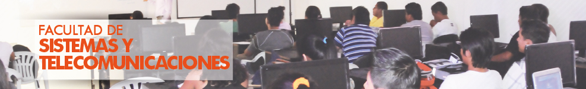

-

FACULTAD DE SISTEMAS Y TELECOMUNICACIONES
*CARRERA INFORMÁTICA
Formar profesionales de alto nivel científico técnico aptos para adaptarse a los cambios tecnológicos con la finalidad de sistematizar y automatizar los procesos productivos de manera integral de acuerdo a los requerimientos de las Organizaciones.
El Ingeniero en Sistemas de la Universidad Estatal Península de Santa Elena, es un profesional capaz de administrar, desarrollar y liderar el desarrollo de Soluciones Informáticas, que en su nivel más alto de complejidad incluyen apoyo en la toma de decisiones, tanto para organizaciones productivas como de servicio, con el propósito de obtener un incremento de eficiencia y eficacia en el funcionamiento global de las organizaciones
* CARRERA ELECTRONICA Y TELECOMUNICACIONES
La carrera de Ingeniería en Electrónica y Telecomunicaciones lidera los procesos de educación científica y tecnológica en la Provincia de Santa Elena a través de sus profesionales, mediante la transferencia y adopción de nuevas tecnologías contribuyendo al desarrollo de la región
Perfil profesional:
Aplicar conocimientos de matemáticas, la ciencia y la ingeniería
Capacidad de diseñar un sistema, componente o proceso para satisfacer las necesidades deseadas dentro de restricciones realistas tales como el medio ambiente, económico, sociales, políticas, éticas.
Capacidad de funcionar en equipos multidisciplinarios.
Habilidad para identificar, formular y resolver problemas de ingeniería.
Comprensión de la responsabilidad ética, moral y profesional.
Capacidad de comunicarse de manera efectiva.
Educación general necesaria para comprender el impacto de las soluciones de ingeniería en un contexto global, económico, ambiental y social.

FACULTAD DE CIENCIAS DE LA INGENIERIA
* CARRERA INGENIERIA CIVIL
Formar Ingenieros Civiles líderes, capaces de generar alternativas de solución a las necesidades físicas, económicas y sociales, mediante un proceso de formación profesional de calidad académica, comprometidos con el desarrollo de la región y el país.
Perfil profesional:
Capacidad de aplicar conocimientos de matemáticas, física y química, así como los fundamentos de la Ingeniería Civil a la identificación, formulación, resolución y evaluación (privada y socialmente) de problemas propios de la Ingeniería Civil en sus áreas Sanitaria e Hidráulica, Estructuras, Vías de Comunicación y Construcción
* CARRERA DE INGENIERIA EN PETRÓLEO
Formar profesionales de la Ingeniería en Petróleo como líderes solidarios altamente competitivos, actuando de manera crítica, interdisciplinaria y ética que contribuyan al bienestar de la sociedad con un desarrollo del sector hidrocarburífero en forma sustentable y sostenible preservando el entorno y el medio ambiente.
Perfil profesional:
Dirigir actividades de prospección, perforación, extracción y desarrollo del campo petrolero.
Evaluar la producción optimizando y controlando los procesos, operativos.
Evaluar los yacimientos Hidrocarburíferos.
Formar parte de organismos de investigación o como perito en asuntos legales relacionados con su campo profesional.
Planificar y dirigir la política petrolera.
Comercialización de derivados del petróleo como combustible, lubricantes, productos petroquímicos y otros.
Almacenamiento, comercialización y negociaciones de contratos petroleros y en los procesos de refinación.
FACULTAD DE CIENCIAS ADMINISTRATIVAS
*CARRERA: ADMINISTRACION DE EMPRESAS
Formar profesionales competentes en ciencias administrativas, con criterio humanista, científico; mediante la actualización y adecuación constantes de la docencia, la investigación y la vinculación con la colectividad. Mismos que en un marco de calidad, contribuyan a construir una sociedad productiva, innovadora, con profundo Impacto, en el entorno regional y nacional, así como su desarrollo socioeconómico, sostenible y del buen vivir”
*CARRERA DE CONTABILIDAD Y AUDITORIA
Perfil profesional:
Planificar y evaluar la información financiera y tributaria de las instituciones y empresas públicas y privadas para la toma de decisiones
Aplicar técnicas actualizadas de comunicación, escrita, oral y digital.
Evaluar sistemas de control interno para mejorar la calidad de las actividades empresariales en instituciones y empresas públicas y privadas.
Actuar con principios ético y moral en el accionar profesional.
Diseñar, implementar y asesorar la gestión administrativa de las instituciones y empresas pública y privada.
Evaluar con eficacia la gestión empresarial planteando soluciones en el ámbito contable, auditor y financiero.
*CARRERA INGENIERÌA EN GESTIÓN Y DESARROLLO TURÍSTICO
Tendrá una sólida formación cultural para desempeñarse con gran capacidad de juicio en el ámbito profesional del nuevo turismo (turismo sistémico). Aplicando sus conocimientos y criterios científico - técnicos a la problemática general de su desarrollo a nivel nacional e internacional, adaptándolo a las particularidades ecológicas y socio culturales de entorno.
Perfil profesional:
Estará dotado de criterios lógicos, filosóficos, históricos, sociológicos y económicos, para la investigación, análisis e interpretación del fenómeno turístico y asociarlo a distintos y particulares entornos, y niveles de desarrollo del proceso y sistema turístico.
Su habilidad de comunicación será óptima expresándose en español e ingles; tendrá múltiples motivaciones que lo inducirán hacia la búsqueda de oportunidades para el desarrollo turístico en cada uno de los segmentos del sistema, logrando la solución de problemas a partir de su aprendizaje y la realización de trabajos creativos en equipo. Su crecimiento profesional a partir de su conciencia social será una constante de auto superación.